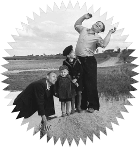
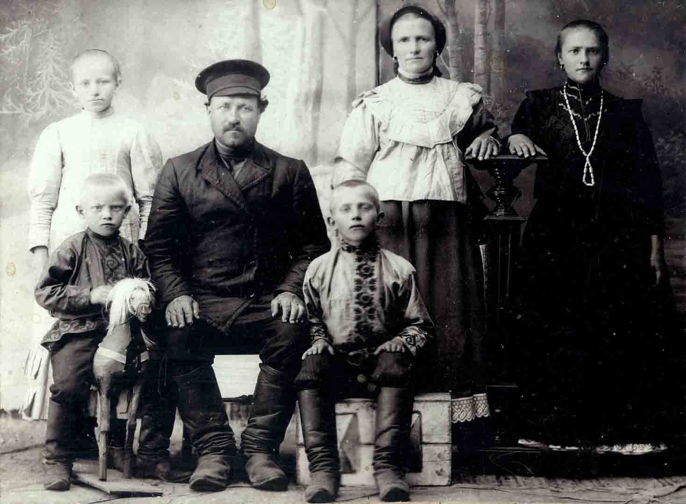

Эффект пинг-понгового шарика
| Эффект пинг-понгового шарика | 22 января 2021 | 19:00 - 20:15 |
купить от 1000 руб.
|
| Эффект пинг-понгового шарика | 22 января 2021 | 19:00 - 20:15 |
купить от 1000 руб.
|
| Эффект пинг-понгового шарика | 22 января 2021 | 19:00 - 20:15 |
купить от 1000 руб.
|
| Эффект пинг-понгового шарика | 22 января 2021 | 19:00 - 20:15 |
купить от 1000 руб.
|
В спектакле «Перья» артисты Упсала-Цирка,
рожденные в 90-ые
Простая ткань детских воспоминаний возвращает всех участников
спектакля - лаборатории

о спектакле
Память конечна. Мы забываем о людях, которые были до нас, и они
исчезают. Исчезают вместе со всеми знаниями, любовью и трагедиями,
которые нужны нам сегодняшним, чтобы помнить, жить и любить,
оставаясь не только собой, но и продолжением прошлых поколений.
В спектакле «Перья» артисты Упсала-Цирка, рожденные в 90-ые – кстати, лихие или свободные? – пытаются вспомнить, какими были их бабушки и дедушки, кто они, чему они пытались научить, чем радовали и чем запомнились, как они росли и у кого учились любить. И понять, как эти воспоминания отражаются в их сегодняшней жизни. Простая ткань детских воспоминаний возвращает всех участников спектакля-лаборатории в пространство зыбкого знания, нетвердой уверенности и осторожной надежды.
В спектакле «Перья» артисты Упсала-Цирка, рожденные в 90-ые – кстати, лихие или свободные? – пытаются вспомнить, какими были их бабушки и дедушки, кто они, чему они пытались научить, чем радовали и чем запомнились, как они росли и у кого учились любить. И понять, как эти воспоминания отражаются в их сегодняшней жизни. Простая ткань детских воспоминаний возвращает всех участников спектакля-лаборатории в пространство зыбкого знания, нетвердой уверенности и осторожной надежды.
О спектакле
Память конечна. Мы забываем о людях, которые были до
нас, и они исчезают. Исчезают вместе со всеми знаниями,
любовью и трагедиями, которые нужны нам сегодняшним,
чтобы помнить, жить и любить, оставаясь не только собой,
но и продолжением прошлых поколений.
В спектакле «Перья» артисты Упсала-Цирка, рожденные в 90-ые – кстати, лихие или свободные? – пытаются вспомнить, какими были их бабушки и дедушки, кто они, чему они пытались научить, чем радовали и чем запомнились, как они росли и у кого учились любить. И понять, как эти воспоминания отражаются в их сегодняшней жизни. Простая ткань детских воспоминаний возвращает всех участников спектакля-лаборатории в пространство зыбкого знания, нетвердой уверенности и осторожной надежды.
В спектакле «Перья» артисты Упсала-Цирка, рожденные в 90-ые – кстати, лихие или свободные? – пытаются вспомнить, какими были их бабушки и дедушки, кто они, чему они пытались научить, чем радовали и чем запомнились, как они росли и у кого учились любить. И понять, как эти воспоминания отражаются в их сегодняшней жизни. Простая ткань детских воспоминаний возвращает всех участников спектакля-лаборатории в пространство зыбкого знания, нетвердой уверенности и осторожной надежды.
Артисты и авторы спектакля постарались увидеть в
действиях воспоминания и уйти от забвения, которое суть
– наказание.
Сотрудники АНО «Пропповский центр», которая занимается
гуманитарными исследованиями традиционной культуры,
сохранением и изучением культурного и социального
наследия России, в первую очередь — в их отношении к
современной ситуации, рассказали артистам и сотрудникам
Упсала-Цирка о том, как старинные практики – телесные,
ритуальные, декоративные, — трансформируются и находят
отражение в сегодняшней повседневности.

Память конечна. Мы забываем о людях, которые были до нас, и
они исчезают. Исчезают вместе со всеми знаниями, любовью и
трагедиями, которые нужны нам сегодняшним, чтобы помнить,
жить и любить, оставаясь не только собой, но и продолжением
прошлых поколений.

Первое, что сделал Упсала-Цирк для создания спектакля –
пришел к антропологам. Но не в качестве объекта
изучения, а для того, чтобы запустить в артистах процесс
осознания себя не просто как отдельного человека, а как
естественного продолжения рода, детей своих родителей,
внуков бабушкам и дедушкам, носителей некоей подчас
непростой семейной истории, влияние на которую оказал
весь страшный ХХ век.



Фотографии

Актеры